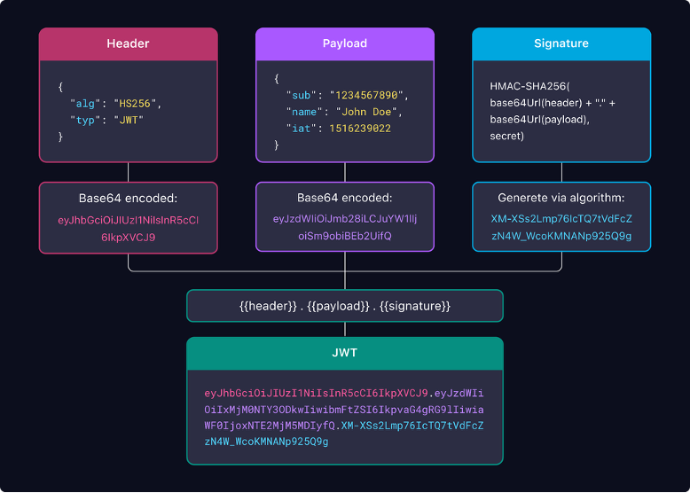

Структура JWT токена
В предыдущей главе мы увидели, как выглядит JWT — длинная строка из букв, цифр и символов. Но за этой кажущейся случайностью скрывается чёткая и элегантная структура. Понимание того, как устроен токен изнутри, критически важно для его правильного использования и обеспечения безопасности.
JWT состоит из трёх частей, разделённых точками: Header (заголовок), Payload (полезная нагрузка) и Signature (подпись). Каждая часть кодируется в формате Base64Url, что делает токен компактным и безопасным для передачи в URL, HTTP-заголовках и других местах.
Три части JWT
Формат токена можно представить следующей схемой:
xxxxx.yyyyy.zzzzz
Header.Payload.SignatureДавайте разберём каждую часть подробно.
1. Header (Заголовок)
Header содержит метаинформацию о токене: тип токента и алгоритм шифрования, который использовался для создания подписи. Обычно это JSON-объект с двумя полями:
- typ (type) — тип токена, всегда равен "JWT".
- alg (algorithm) — алгоритм подписи, например, HS256 (HMAC с SHA-256) или RS256 (RSA с SHA-256).
Пример Header в формате JSON:
{
"alg": "HS256",
"typ": "JWT"
}После кодирования в Base64Url этот JSON превращается в первую часть токена, например: eyJhbGciOiJIUzI1NiIsInR5cCI6IkpXVCJ9.
2. Payload (Полезная нагрузка)
Payload — это самая важная часть токена. Здесь хранятся данные о пользователе и дополнительная информация. Данные в Payload называются claims (утверждения) и делятся на три типа:
- Registered claims (стандартные) — рекомендованные, но не обязательные поля:
iss(issuer) — кто выпустил токен.sub(subject) — кому принадлежит токен (обычно ID пользователя).aud(audience) — для кого предназначен токен.exp(expiration time) — время истечения срока действия (обязательно для безопасности!).iat(issued at) — время выпуска токена.
- Public claims (публичные) — пользовательские поля, которые можно свободно использовать, но чтобы избежать коллизий, их стоит регистрировать в IANA JSON Web Token Registry.
- Private claims (приватные) — пользовательские поля для обмена информацией между сторонами, которые договорились об их использовании. Например,
user_id,role,permissions.
Пример Payload в формате JSON:
{
"sub": "1234567890",
"name": "Иван Иванов",
"role": "admin",
"iat": 1516239022,
"exp": 1516242622
}После кодирования в Base64Url получается вторая часть токена, например: eyJzdWIiOiIxMjM0NTY3ODkwIiwibmFtZSI6IkpvaG4gRG9lIiwiaWF0IjoxNTE2MjM5MDIyfQ.
3. Signature (Подпись)
Signature — это криптографическая подпись, которая гарантирует целостность токена. Она создаётся путём объединения закодированных Header и Payload, секретного ключа (secret) и применения алгоритма, указанного в Header.
Формула создания подписи для алгоритма HS256:
HMACSHA256(
base64UrlEncode(header) + "." + base64UrlEncode(payload),
secret
)Подпись нужна для того, чтобы сервер мог убедиться, что токен не был изменён после выпуска. Если злоумышленник попытается изменить Payload (например, поменять роль с "user" на "admin"), подпись станет недействительной, и сервер отклонит такой токен.
Визуальная схема структуры JWT
На изображении ниже наглядно показана структура JWT токена и процесс его создания:

Как декодировать JWT
Поскольку Header и Payload закодированы в Base64Url, их легко декодировать обратно в JSON. Это можно сделать несколькими способами:
- Вручную — скопировать часть токена и использовать любой онлайн-декодер Base64.
- На сайте jwt.io — вставить весь токен, и сайт автоматически покажет расшифрованные Header и Payload.
- С помощью библиотек — в JavaScript это
atob()или библиотекаjwt-decode, в Python — модульbase64.
Однако проверить подпись (то есть убедиться, что токен не подделан) можно только зная секретный ключ, который хранится на сервере. Именно поэтому JWT безопасен: прочитать данные может любой, но изменить их без знания ключа — невозможно.
Краткое резюме
JWT состоит из трёх частей: Header (метаданные), Payload (данные пользователя) и Signature (криптографическая защита). Первые две части закодированы в Base64Url и легко читаемы, третья часть гарантирует целостность токена. Понимание этой структуры — ключ к правильному использованию JWT в ваших приложениях.
Теперь, когда мы разобрались, как устроен JWT изнутри, давайте посмотрим, как его использовать на практике: как создавать, проверять и хранить токены в реальных приложениях.